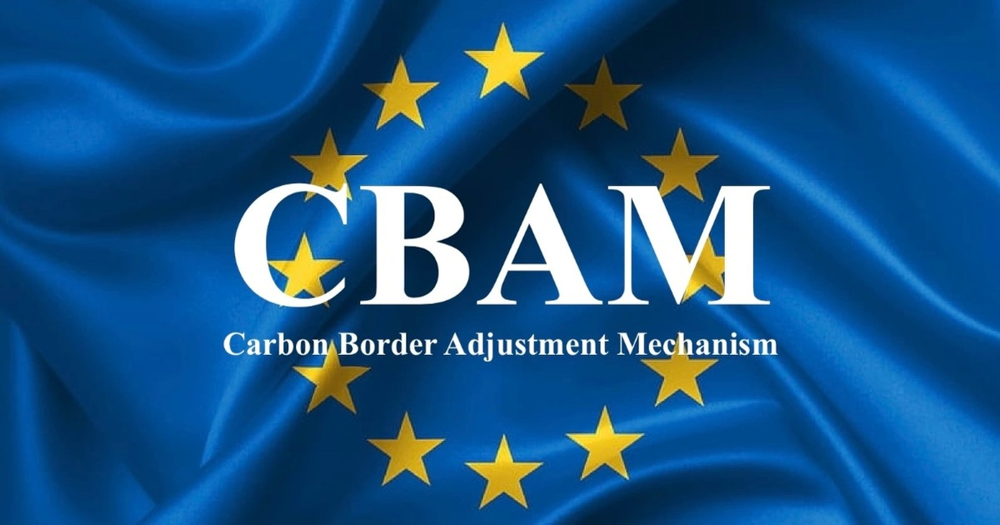
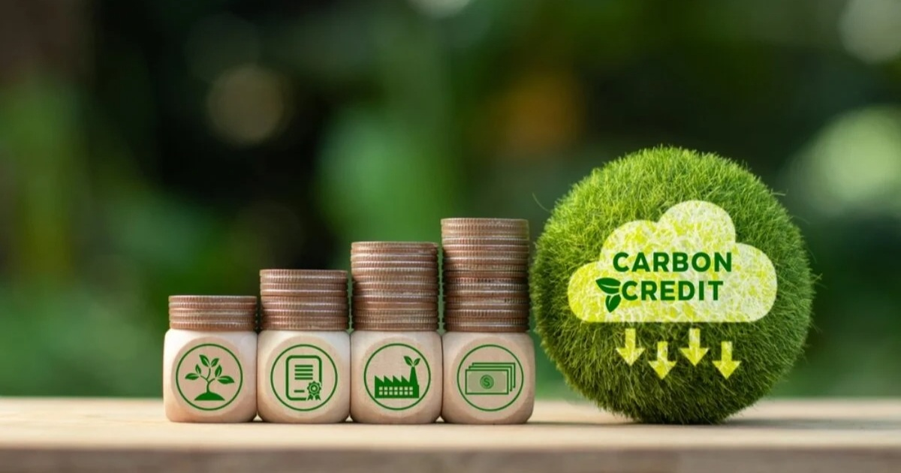
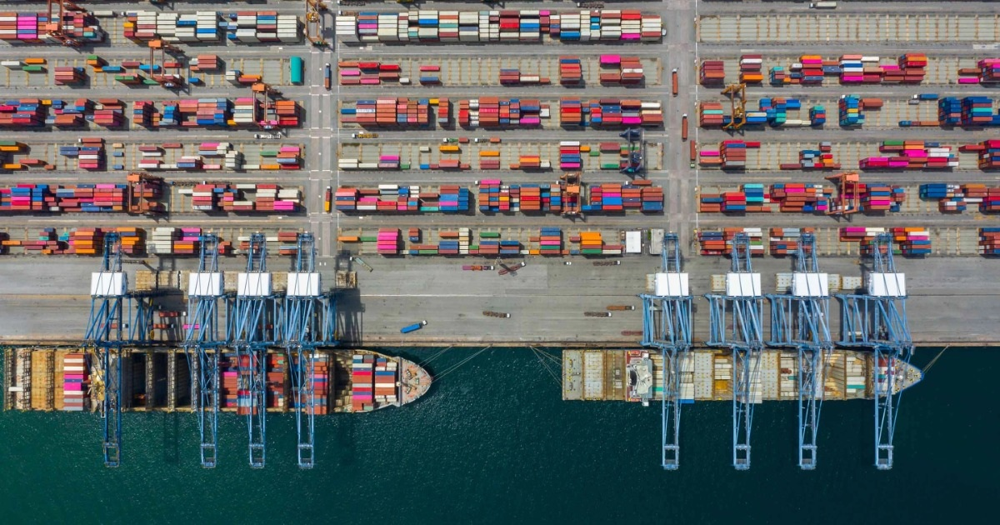
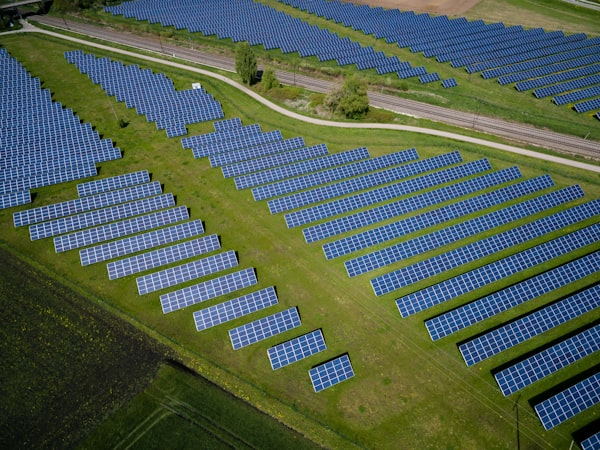

EU công bố 10 hướng dẫn CBAM, doanh nghiệp xuất khẩu cần lưu ý
(Dân trí) — Ủy ban châu Âu vừa công bố 10 hướng dẫn kỹ thuật CBAM, chấm dứt thời kỳ dùng số liệu ước tính và buộc các nhà sản xuất xuất khẩu phải kiểm toán lượng phát thải thực tế.
Thiếu dữ liệu phát thải, doanh nghiệp xuất khẩu có nguy cơ đội chi phí CBAM
Nghịch lý thị trường carbon: Vì sao giao dịch giảm nhưng giá lập đỉnh mới?

Giá tín chỉ carbon: Vì sao có loại dưới 1 USD, loại hơn 1.000 USD?
TPHCM dự kiến bắt buộc phân loại rác tại nguồn từ năm 2027

ESG không còn là báo cáo bóng bẩy, không làm ESG thật thì khó có đơn hàng
(Dân trí) — ESG không còn là câu chuyện thương hiệu mà đã thành "giấy thông hành" sống còn khi đối tác quốc tế siết chặt truy xuất nguồn gốc và phát thải.
5 việc SME cần làm nếu muốn chuyển đổi xanh
(Dân trí) — Theo GS. TS Mạc Quốc Anh, SME không cần nguồn vốn lớn để chuyển đổi xanh. Doanh nghiệp có thể bắt đầu từ dự án nhỏ, lấy khoản tiết kiệm để tái đầu tư và đo lường bằng số liệu cụ thể.
Case Study VinaFastener: Tối ưu tiền chất và tiết kiệm 28% thuế Carbon xuất khẩu Đức
Kinh nghiệm thực tiễn từ doanh nghiệp sản xuất phụ kiện kim loại Việt Nam trong việc số hóa dữ liệu Scope 1, Scope 2 và đáp ứng 100% yêu cầu thẩm định CBAM của đối tác châu Âu.
Định giá giảm từ 100 tỷ USD còn 26 tỷ khi IPO: Shein mắc kẹt ở bài toán ESG
(Dân trí) — Shein huy động 1,7 tỷ USD với định giá 26 tỷ USD, chỉ bằng 1/4 mức đỉnh, trong bối cảnh chịu sức ép từ lượng phát thải carbon khổng lồ, rủi ro chuỗi cung ứng và yêu cầu tuân thủ ESG khắt khe từ thị trường London.
| Mã | Tên Cơ sở / Doanh nghiệp | Mã số thuế | Địa phương | Bộ Quản lý & Ngành | Ngưỡng Tiêu chuẩn | Trạng thái Pháp lý | Thao tác |
|---|

Kiểm kê Khí nhà kính là gì? Hướng dẫn Phân loại Scope 1, Scope 2 và Scope 3
Bóc tách toàn diện ranh giới phát thải trực tiếp từ lò đốt, điện năng mua ngoài và chuỗi cung ứng theo tiêu chuẩn quốc tế.
Đọc toàn văn →
Hướng dẫn Tính toán Suất Phát thải Riêng (SEE) theo Quy định EU CBAM
Quy tắc xác định phát thải trực tiếp, gián tiếp và cộng dồn tiền chất (precursors) tránh bị áp đặt mức phạt từ Hải quan EU.
Đọc toàn văn →Sàn carbon sau gần 2 tháng vận hành trên HNX đang diễn biến ra sao?
Đánh giá thanh khoản, quy mô chuyển nhượng 1.210 tấn CO₂ tương đương và nhu cầu bù trừ của các doanh nghiệp nhiệt điện.
Đọc toàn văn →Tra cứu Ngưỡng Phát thải Bắt buộc Kiểm kê KNK (≥ 3.000 tCO₂e / 1.000 TOE)
Danh mục cơ sở phát thải trọng điểm và chu kỳ kiểm kê định kỳ 02 năm/lần theo Quyết định Thủ tướng Chính phủ.
Đọc toàn văn →Chiến lược Đào tạo 'Nhân sự Xanh' Nội bộ: Tối ưu 70% Chi phí Tư vấn
Chuyển giao năng lực đo lường và làm chủ phần mềm tính toán KNK tại chỗ cho đội ngũ kỹ sư nhà máy.
Đọc toàn văn →
5 việc SME cần làm nếu muốn chuyển đổi xanh hiệu quả và tiết kiệm chi phí
GS.TS Mạc Quốc Anh: SME không cần nguồn vốn khổng lồ để bắt đầu; lộ trình từ tiết kiệm năng lượng đến số hóa.
Đọc toàn văn →Định giá giảm từ 100 tỷ USD còn 26 tỷ khi IPO: Shein mắc kẹt ở bài toán ESG
Thách thức từ lượng phát thải carbon khổng lồ, rủi ro chuỗi cung ứng và cơ cấu quản trị khiến định giá công ty sụt giảm 74% trước thềm niêm yết London.
Đọc bài viết →
Bị phạt hàng triệu USD, doanh nghiệp giật mình với chữ S trong ESG
Nhiều doanh nghiệp quá chú trọng yếu tố Môi trường (E) mà xem nhẹ Trụ cột Xã hội (S), dẫn đến các án phạt nặng nề và bị đối tác quốc tế hủy đơn hàng.
Đọc bài viết →Nếu cứ khai thác mà không bù đắp, các nước sẽ rơi vào 'lời nguyền tài nguyên'
Phân tích chuyên sâu về cơ chế tính toán vốn tự nhiên và tầm quan trọng của việc tái đầu tư sinh thái để bảo đảm tăng trưởng bền vững dài hạn.
Đọc bài viết →1.000 đồng các bên Grab, Be, GSM thu 'bảo vệ môi trường' được dùng ra sao?
Tìm hiểu dòng tiền và các dự án bù đắp carbon, trồng rừng và hỗ trợ tài xế chuyển đổi xe điện từ khoản thu phí môi trường của các ứng dụng gọi xe.
Đọc bài viết →Vũ khí bí mật để doanh nghiệp Việt hút được nhiều tiền đầu tư FDI
Minh bạch số liệu phát thải và có lộ trình khử carbon rõ ràng đang trở thành điều kiện tiên quyết để tiếp cận các quỹ tài chính xanh toàn cầu.
Đọc bài viết →Sự thật gây bất ngờ về túi nhựa tự hủy và nguy cơ Greenwashing
Nhiều sản phẩm gắn mác "tự hủy sinh học" thực chất chỉ phân rã thành vi nhựa nguy hại nếu thiếu điều kiện ủ công nghiệp đạt chuẩn ISO 17088.
Đọc bài viết →